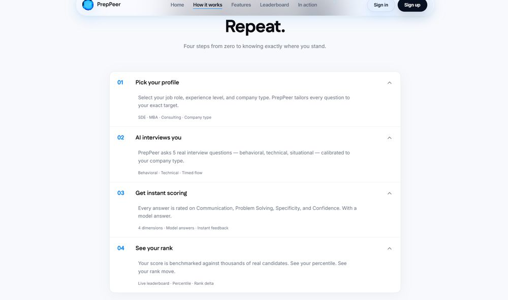
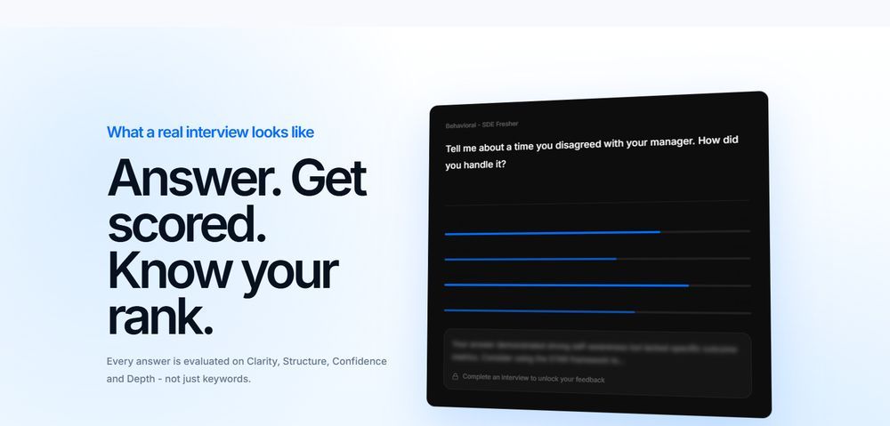
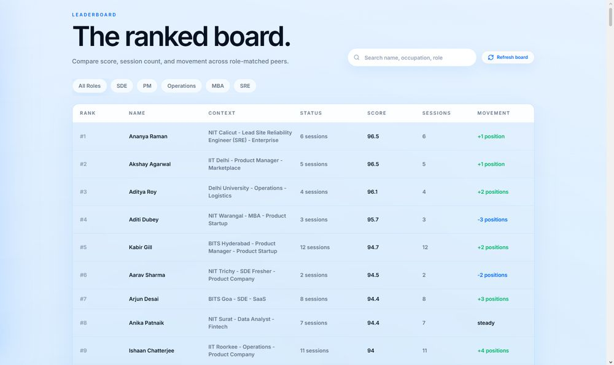

PrepPeer
AI mock interview platform. Live at prep-peer.vercel.app
The problem
I found a real problem in a country like India, where teenagers just out of college and actively job hunting have no way to know how they rank against other people preparing for the same job role, or how good they actually are in their field before the real interview.

What I did, and decided
I built PrepPeer with my co-founder Adarsh Vijay: role-specific AI interview questions, 4-dimension scoring (Communication, Problem Solving, Specificity, Confidence), and a live peer leaderboard. It's a live production app, built entirely on free tools, zero budget.

The leaderboard needed real peers to mean anything, but a brand-new product has no users. I seeded it with friends, family, and test accounts rather than waiting for organic traffic, because people won't compete against an empty leaderboard. Trust has to come before scale, not after.

For the AI layer, I had two free API options, Gemini and Groq (Llama 3.3-70b). Gemini was slower with about the same accuracy, so I went with Groq. Getting the 4-dimension scoring to behave consistently took several days of testing and prompt adjustments. It's still not perfect, there are bugs, and I know exactly why: I'm running on free-tier APIs.

What came of it
Real testers, beyond friends and family, used it specifically to prep before switching jobs, to get a feel for what questions would come and roughly where they'd score. I submitted PrepPeer to Hub71's accelerator; no response yet.
What I actually walked away with: I learned how to host a real website, set up a working database, and secure it properly (rate limiting, no password leaks), despite not coming from a strong coding background. Prompting well and using the right AI tools was the actual skill that got this built.
Known, disclosed issues
Leaderboard is seeded (friends, family, test accounts), not organic traffic yet. Groq's free tier caps at 1,000 requests/day for Llama 3.3 70B, which is the source of most current scoring inconsistencies. No response yet from Hub71 or PrimetradeAI applications.